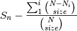

Species Diversity¶
EcoPy contains several methods for estimating species diversity:
- diversity(x, method='shannon', breakNA=True)¶
Calculate species diversity for every site in a site x species matrix
Parameters
- x: numpy.ndarray or pandas.DataFrame (required)
- A site x species matrix, where sites are rows and columns are species.
- method: [‘shannon’ | ‘simpson’ | ‘invSimpson’ | ‘dominance’ | ‘spRich’ | ‘even’]
shannon: Calculates Shannon’s H

where is the relative abundance of species k
simpson: Calculates Simpson’s D
invSimpson: Inverse of Simpson’s D
dominance Dominance index.

spRich: Species richness (# of non-zero columns)
even: Evenness of a site. Shannon’s H divided by log of species richness.
- breakNA: [True | False]
- Whether null values should halt the process. If False, then null values are removed from all calculations.
Example
Calculate Shannon diversity of the ‘varespec’ dataset from R:
import pandas.rpy.common as com import ecopy as ep varespec = com.load_data('varespec', 'vegan') shannonH = ep.diversity(varespec, 'shannon')
- rarefy(x, method='rarefy', size=None, breakNA=True)¶
Returns either rarefied species richness or draws a rarefaction curve for each row. Rarefied species richness is calculated based on the smallest sample (default) or allows user-specified sample sizes.
Parameters
- x: numpy.ndarray or pandas.DataFrame (required)
- A site x species matrix, where sites are rows and columns are species.
method: [‘rarefy’ | ‘rarecurve’]
rarefy: Returns rarefied species richness.
where N is the total number of individuals in the site, is the number of individuals of species i, and size is the sample size for rarefaction
rarecurve: Plots a rarefaction curve for each site (row). The curve is calculated as

where is the total number of species in the matrix and size ranges from 0 to the total number of individuals in each site
Example
Calculate rarefied species richness for the BCI dataset:
import pandas.rpy.common as com import ecopy as ep varespec = com.load_data('BCI', 'vegan') rareRich = ep.rarefy(varespec, 'rarefy')
Show rarefaction curves for each site:
ep.rarefy(varespec, 'rarecurve')